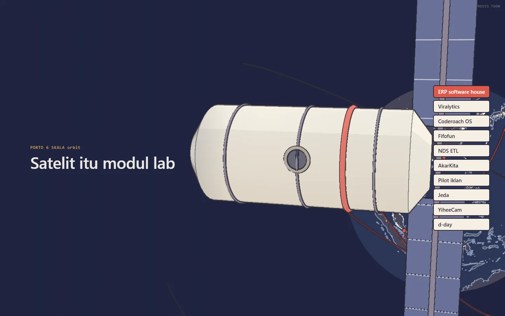
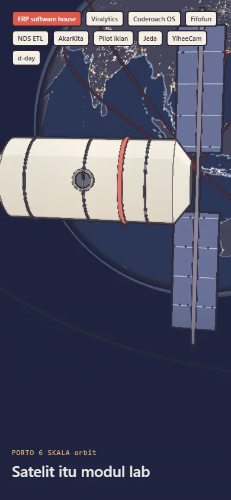
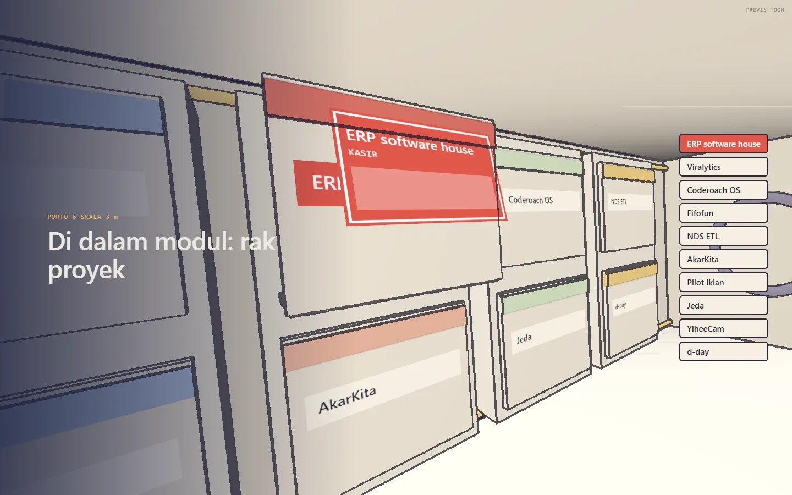
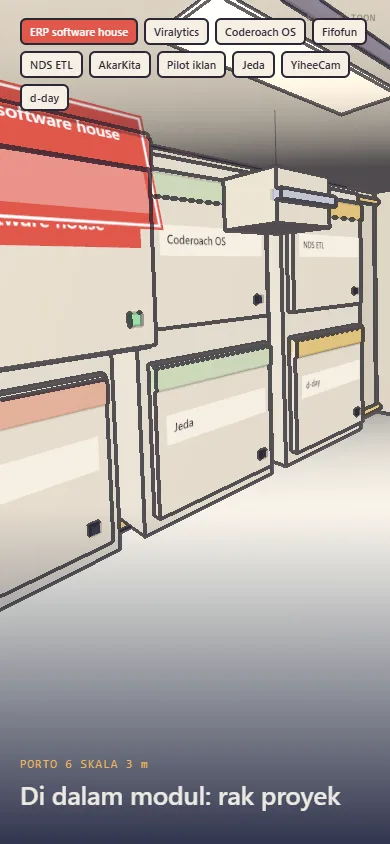

Kamera mendekati satelit, menembus jendela bulatnya, lalu menoleh ke rak loker. Tiap loker satu proyek; loker yang dipilih tertarik keluar dan kartunya terbuka. Daftar nama di kanan tetap selalu terlihat.



